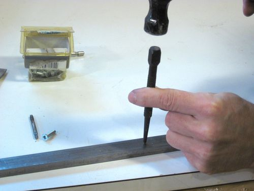
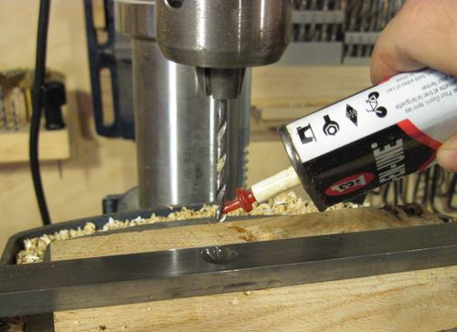
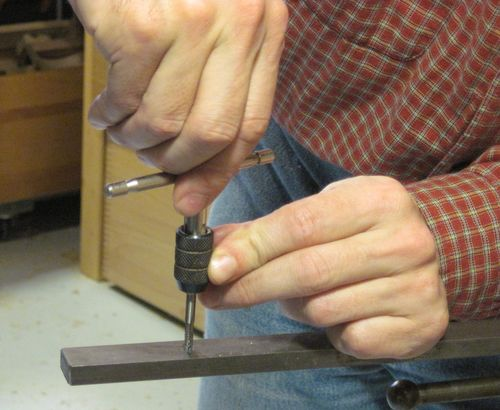
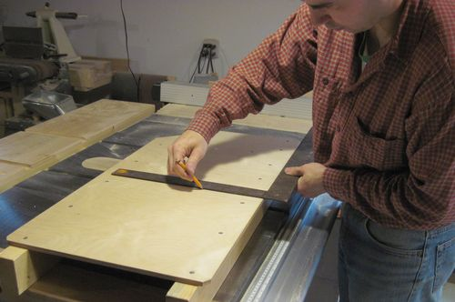
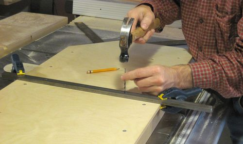
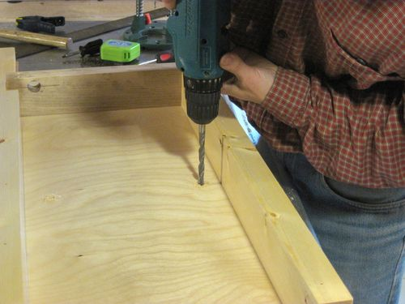
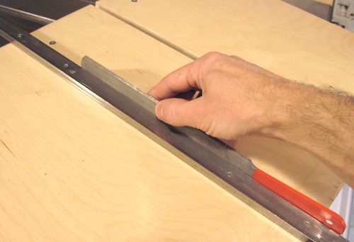
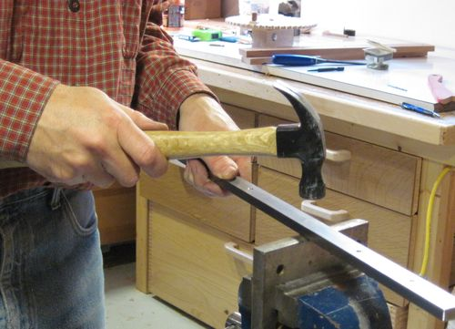
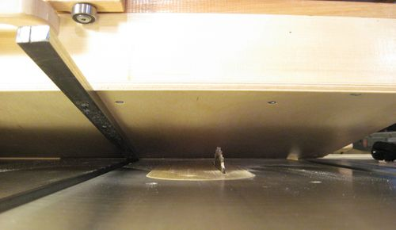
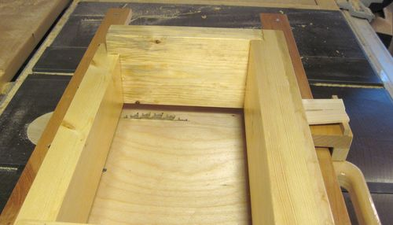

Attaching the guidebarThe guide bar for the box joint jig is made of 3/4" x 3/8" cold rolled steel. The guide bar extends out from both front and back of the jig to give it extra stability. I don't recommend typical pre-made jig guidebars because this jig is quite large and heavy and a short fancy piece of adjustable aluminium meant for smaller jigs may not be sturdy enough.  Before drilling holes in the guide bar mark where the holes need to go and use a center punch to put a divot in the bar where the holes should go.
The divot helps the drill go in the right spot. In steel, without a divot, a
drill tip will typically wander to the side a little bit before fully engaging
the material.
 For an 8-32" thread, it's best to use a #29 machinists drill. I don't have a machinist's drill set, but the best approximation is to use a 9/64" drill. A 1/8" drill can also be used, but if you use that size drill, the tap will have to remove much more material and is more likely to break. Drills work better in steel if you put a drop of oil on them. that helps with lubrication so the drill runs cooler. Also, if the drill gets too hot, it will smoke a little so you know to back off. You only need a drop, but I had a hard time getting the photo without dribbling a whole lot onto the drill. On drilling the holes, it helps to back off on the pressure briefly every few seconds of drilling. This puts a gap in the long chips that get made so you don't end up with these sharp strands of long metal whirling around the drill bit.  Before tapping the hole, put a drop of oil into the drilled holes to lubricate your tap. Use an 8-32 tap. It's all too easy to break these small taps, so be careful. I'm using my left hand to steady the tap as I start the thread to make sure I don't wiggle it side-to-side too much. After turning forward by no more than four turns, twist it back out completely, clean off the shavings and then go back in. It also helps to back off by half a turn after each turn forward as you tap. This helps to break the chips. Otherwise you may end up getting the tap jammed in a way that you can go neither forward nor back. If you break the tap, don't feel stupid. It happens. Don't try to drill it out, just drill a new hole next to it and tap it with a new tap.
The tap I'm using is actually one I broke years before, but it had enough thread
left on it that I was able to grind a new cutting edge onto the remaining
stub.

To make sure you mount your bar square, use a good trustworthy square to mark
two lines 3/4" apart for where the bar should mount.
 Use some clamps to fix the bar in position then transfer the center position for where the holes should go. I'm using a drill that just fits into my tapped holes to transfer the center positions onto the plywood base.
Also mark which way the bar was against the wood so that you will be able
to put it back on with the same orientation once you mount it.
It's important to mount the bar the same way afterwards
so that any inaccuracies in your hole positions won't matter as much.

I used the same 9/64" drill to drill the holes in the plywood as I did
for the bar. that way the thread of the screws fits fairly tightly in the
plywood (no photo of that step). Then, I added a countersink to
the top side for the screw heads. I didn't have room to get in there with
a countersink without disassembling the frame of the jig again, so instead
I made the countersink with the tip of a larger drill.
Careful if you do that, because
the larger drills can really bite into the material so it's all too easy
to go too deep.
 Chances are, even if your bar had a little bit of play in the T-slot, it may fit fairly tightly after you mounted it on the bottom of your jig. Having just a fraction of a millimeter of error in the hole placements causes the bar to flex into a curve just little bit, which makes it tighter fit in the straight slot. You may have to remove it again and expand some of your holes in the wood to the side with a small file if its too tight.
It may also be that the bar has some slight bumps on the side from
having been impacted near the edge. These can easily be removed
with a flat file, as shown.

In the unlikely event that it's too loose, you can widen it a bit by pounding
it on an anvil of sorts. Don't hit too close to the edge though. Also, you are
likely to give the bar a slight curve from the pounding, which will also help
to make it tight. Overall though, even if there is a bit of play, the jig tends
to produce very consistent cuts if you always push it by the handle
in the same way.

The next step is to actually cut a slot in the jig. This is a simple matter
of sliding it across the saw. Before you do that, check that the line of
cut doesn't hit any of the screws holding the jig together. If you put the
screws in the same place as in the plans, you will be clear, but check
anyway just to be safe!

Here's making the first cut from the top. Initially, the jig starts
out with a cut just the width of the saw blade. But once you start using
it with various dado blades and such, the hole tends to widen up
by quite a bit.
|